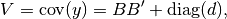
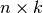
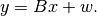
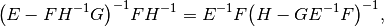
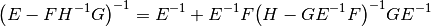
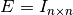
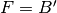
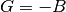
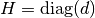

Covariance matrix estimation¶
Meva provides two methods to estimate the covariance matrix of log asset
returns: one, cov_pca based on pricipal component analysis (PCA) and one,
cov_fa based on factor analysis. Both functions return  and
and
 such that the covariance matrix
such that the covariance matrix  is given by
is given by

where is a  matrix mapping  factors to
factors to
 assets, is…
assets, is…
cov_pca (PCA-based)¶
The cov_pca function uses principal component analysis to fit a factor-model
decomposition of market variability. This model decomposes the market return
 into two parts:
into two parts:

Here, is a matrix mapping factors to
assets,  is a draw from a dimensional iid standard
normal distribution, and
is a draw from a dimensional iid standard
normal distribution, and  is a draw from an independent normal
distribution in which the variance of the
is a draw from an independent normal
distribution in which the variance of the  -th component is given by
-th component is given by
 .
.
The cov_pca function handles missing data, coded as nan.
cov_fa (factor-analysis-based)¶
The cov_fa function fits the same factor model to the market returns. But instead of using principal component analyisis to decompose the variance, this factor analysis function uses the EM (expectation-maximization) algorithm to iteratively find a maximum-likelihood fit.
For background on the factor analysis model and its EM solution see Andrew Ng’s freely available machine-leaning notes.
The only difference between our algorithm and his is that we use the matrix identities

and

to reduce  matrix inversions to
matrix inversions to  matrix
inversions. These identities result form standard blockwise inversion
teckniques, for instance on wikipedia
here.
matrix
inversions. These identities result form standard blockwise inversion
teckniques, for instance on wikipedia
here.
We apply them with , , , and
 during the E-step in order to avoid
inversions.
The cov_fa function cannot handle missing data.